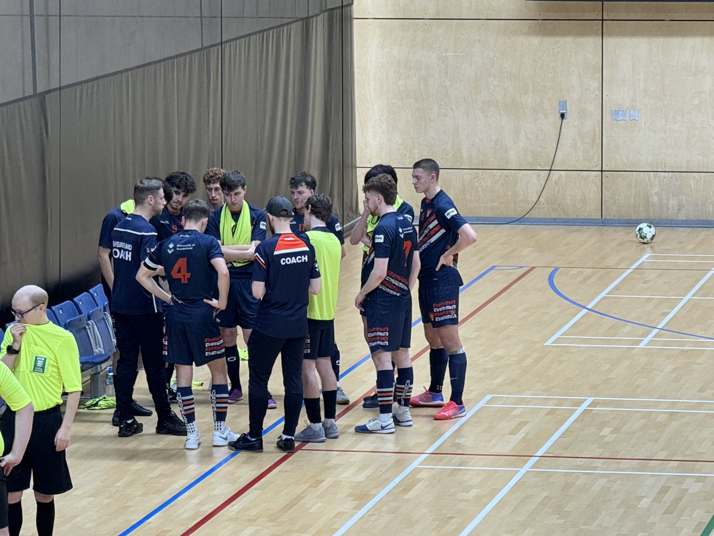

Team Sunderland Futsal
National Futsal Series · Tier 2 North · 2025/26

Season Totals
8 goals in 7 appearances
7
Appearances
1
Started
6
Bench appearances
8
Goals
Eight goals from seven appearances in his first NFS season.
Verify on NFS League Republic